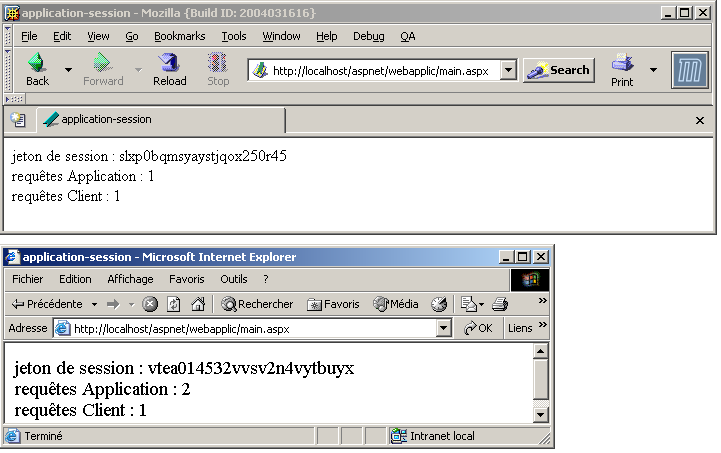
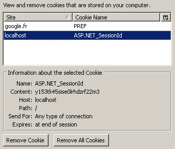
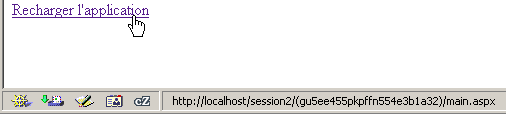
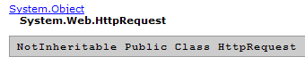

4. Fundamentos del desarrollo ASP.NET
4.1. El concepto de aplicación web ASP.NET
4.1.1. Introducción
Una aplicación web es una aplicación que agrupa diversos documentos (HTML, código .NET, imágenes, sonidos, etc.). Estos documentos deben estar en una misma raíz, denominada raíz de la aplicación web. A esta raíz se le asocia una ruta virtual del servidor web. Ya hemos visto el concepto de carpeta virtual para el servidor web Cassini. Este concepto también existe para el servidor web IIS. Una diferencia importante entre ambos servidores es que, en un momento dado, IIS puede tener cualquier número de carpetas virtuales, mientras que el servidor web Cassini solo tiene una, la que se especificó al iniciarlo. Esto significa que el servidor IIS puede servir varias aplicaciones web simultáneamente, mientras que el servidor Cassini solo sirve una a la vez. En los ejemplos anteriores, el servidor Cassini siempre se iniciaba con los parámetros (<webroot>,/aspnet) que asociaban la carpeta virtual /aspnet a la carpeta física <webroot>. Por lo tanto, el servidor web siempre servía la misma aplicación web. Esto no nos impidió escribir y probar páginas diferentes e independientes dentro de esa única aplicación web. Cada aplicación web tiene sus propios recursos, que se encuentran en su raíz física <webroot>:
- una carpeta [bin] en la que se pueden colocar clases precompiladas
- un archivo [global.asax] que permite inicializar la aplicación web en su conjunto, así como el entorno de ejecución de cada uno de sus usuarios
- un archivo [web.config] que permite configurar el funcionamiento de la aplicación
- un archivo [default.aspx] que actúa como puerta de entrada a la aplicación
- ...
En cuanto una aplicación utiliza uno de estos tres recursos, necesita una ruta física y virtual propias. De hecho, no hay motivo alguno para que dos aplicaciones web diferentes se configuren de la misma manera. Todos nuestros ejemplos anteriores pudieron colocarse en la misma aplicación (<webroot>, /aspnet) porque no utilizaban ninguno de los recursos mencionados.
Volvamos a la arquitectura MVC recomendada al principio de este capítulo para el desarrollo de una aplicación web:

La aplicación web está formada por los archivos de clase (controlador, clases de negocio, clases de acceso a datos) y los archivos de presentación (documentos HTML, imágenes, sonidos, hojas de estilo, etc.). El conjunto de estos archivos se colocará en una misma raíz que a veces llamaremos <application-path>. Esta raíz se asociará a una ruta virtual <application-vpath>. La asociación entre esta ruta virtual y la ruta física se realiza mediante la configuración del servidor web. Hemos visto que, en el caso del servidor Cassini, esta asociación se realiza al iniciar el servidor. Por ejemplo, en una ventana de DOS, se iniciaría Cassini con:
En la carpeta <application-path>, encontraremos, según nuestras necesidades:
- la carpeta [bin] para colocar allí clases precompiladas (dll)
- el archivo [global.asax] cuando necesitemos realizar inicializaciones, ya sea al iniciar la aplicación o al iniciar una sesión de usuario
- el archivo [web.config] cuando necesitemos configurar la aplicación
- el archivo [default.aspx] cuando necesitemos una página por defecto en la aplicación
Para respetar este concepto de aplicación web, los ejemplos que siguen se colocarán todos en una carpeta <application-path> específica de la aplicación, a la que se asociará una carpeta virtual <application-vpath>, iniciándose el servidor Cassini de manera que se vinculen estos dos parámetros.
4.1.2. Configurar una aplicación web
Si <application-path> es la raíz de una aplicación ASP.NET, se puede utilizar el archivo <application-path>\web.config para configurarla. Este archivo tiene el formato XML. A continuación se muestra un ejemplo:
<?xml version="1.0" encoding="UTF-8" ?>
<configuration>
<appSettings>
<add key="nom" value="tintin"/>
<add key="age" value="27"/>
</appSettings>
</configuration>
Hay que tener en cuenta que las etiquetas XML distinguen entre mayúsculas y minúsculas. Toda la información de configuración debe estar entre las etiquetas <configuration> y </configuration>. Existen numerosas secciones de configuración que se pueden utilizar. Aquí solo presentamos una, la sección <appSettings>, que permite inicializar datos con la etiqueta <add>. La sintaxis de esta etiqueta es la siguiente:
Cuando el servidor web inicia una aplicación, comprueba si en <application-path> hay un archivo llamado web.config. Si es así, lo lee y almacena su información en un objeto de tipo [ConfigurationSettings] que estará disponible en todas las páginas de la aplicación mientras esta esté activa. La clase [ConfigurationSettings] tiene un método estático [AppSettings]:

Para obtener el valor de una clave C del archivo de configuración, se escribe ConfigurationSettings.AppSettings("C"). Se obtiene una cadena de caracteres. Para utilizar el archivo de configuración anterior, creemos una página [default.aspx]. El código VB del archivo [default.aspx.vb] será el siguiente:
Imports System.Configuration
Public Class _default
Inherits System.Web.UI.Page
Protected nom As String
Protected age As String
Private Sub Page_Load(ByVal sender As System.Object, ByVal e As System.EventArgs) Handles MyBase.Load
'recuperamos la información de configuración
nom = ConfigurationSettings.AppSettings("nom")
age = ConfigurationSettings.AppSettings("age")
End Sub
End Class
Se observa que, al cargar la página, se recuperan los valores de los parámetros de configuración [nom] y [age]. Estos se mostrarán mediante el código de presentación de [default.aspx]:
<%@ Page src="default.aspx.vb" Language="vb" AutoEventWireup="false" Inherits="_default" %>
<html>
<head>
<title>Configuration</title>
</head>
<body>
Nom :
<% =nom %><br/>
Age :
<% =age %><br/>
</body>
</html>
Para la prueba, colocamos los archivos [web.config], [default.aspx] y [default.aspx.vb] en la misma carpeta:
D:\data\devel\aspnet\poly\chap2\config1>dir
30/03/2004 15:06 418 default.aspx.vb
30/03/2004 14:57 236 default.aspx
30/03/2004 14:53 186 web.config
Sea <application-path> la carpeta donde se encuentran los tres archivos de la aplicación. El servidor Cassini se inicia con los parámetros (<application-path>,/aspnet/config1). Solicitamos el URL [http://localhost/aspnet/config1]. Como [config1] es una carpeta, el servidor web buscará un archivo [default.aspx] en su interior y lo mostrará si lo encuentra. En este caso, lo encontrará:

4.1.3. Aplicación, Sesión, Contexto
4.1.3.1. El archivo global.asax
El código del archivo [global.asax] siempre se ejecuta antes de que se cargue la página solicitada por la solicitud actual. Debe estar ubicado en la raíz <application-path> de la aplicación. Si existe, el servidor web utiliza el archivo [global.asax] en varios momentos:
- cuando la aplicación web se inicia o se cierra
- cuando se inicia o finaliza una sesión de usuario
- cuando se inicia una solicitud de usuario
Al igual que con las páginas .aspx, el archivo [global.asax] se puede escribir de diferentes maneras y, en particular, separando el código VB en una clase controladora y el código de presentación. Esta es la opción predeterminada de la herramienta Visual Studio y aquí haremos lo mismo. Normalmente no hay que encargarse de la presentación, ya que esta función recae en las páginas .aspx. El contenido del archivo [global.asax] se reduce entonces a una directiva que hace referencia al archivo que contiene el código del controlador:
<%@ Application src="Global.asax.vb" Inherits="Global" %>
Cabe señalar que la directiva ya no es [Page], sino [Application]. El código del controlador [global.asax.vb] asociado y generado por la herramienta Visual Studio es el siguiente:
Imports System
Imports System.Web
Imports System.Web.SessionState
Public Class Global
Inherits System.Web.HttpApplication
Sub Application_Start(ByVal sender As Object, ByVal e As EventArgs)
' Se activa al iniciar la aplicación
End Sub
Sub Session_Start(ByVal sender As Object, ByVal e As EventArgs)
' Se activa al iniciar la sesión
End Sub
Sub Application_BeginRequest(ByVal sender As Object, ByVal e As EventArgs)
' Se activa al inicio de cada solicitud
End Sub
Sub Application_AuthenticateRequest(ByVal sender As Object, ByVal e As EventArgs)
' Se activa cuando se intenta autenticar el uso
End Sub
Sub Application_Error(ByVal sender As Object, ByVal e As EventArgs)
' Se activa cuando se produce un error
End Sub
Sub Session_End(ByVal sender As Object, ByVal e As EventArgs)
' Se activa cuando finaliza la sesión
End Sub
Sub Application_End(ByVal sender As Object, ByVal e As EventArgs)
' Se activa cuando finaliza la aplicación
End Sub
End Class
Cabe señalar que la clase del controlador deriva de la clase [HttpApplication]. A lo largo del ciclo de vida de una aplicación, se producen varios eventos importantes. Estos son gestionados por procedimientos cuyo esqueleto se muestra arriba.
- [Application_Start]: recordemos que una aplicación web está «encerrada» en una ruta virtual. La aplicación se inicia tan pronto como un cliente solicita una página situada en esa ruta virtual. Entonces se ejecuta el procedimiento [Application_Start]. Será la única vez. En este procedimiento se realizará toda la inicialización necesaria para la aplicación, como por ejemplo crear objetos cuya vida útil sea la misma que la de la aplicación.
- [Application-End]: se ejecuta cuando la aplicación ha finalizado. A cada aplicación se le asocia un tiempo de inactividad, configurable en [web.config], tras el cual la aplicación se considera finalizada. Por lo tanto, es el servidor web el que toma esta decisión en función de la configuración de la aplicación. El tiempo de inactividad de una aplicación se define como el tiempo durante el cual ningún cliente ha realizado una solicitud de un recurso de la aplicación.
- [Session-Start]/[Session_End]: A cada cliente se le asigna una sesión, salvo que la aplicación esté configurada para no utilizar sesiones. Un cliente no es un usuario frente a su pantalla. Si este ha abierto dos navegadores para consultar la aplicación, representa dos clients. Un cliente se identifica mediante un token de sesión que debe adjuntar a cada una de sus solicitudes. Este token de sesión es una secuencia de caracteres generada aleatoriamente por el servidor web y es única. Dos clients no pueden tener el mismo token de sesión. Este token seguirá al cliente de la siguiente manera:
- el cliente que realiza su primera solicitud no envía ningún token de sesión. El servidor web lo detecta y le asigna uno. Este es el inicio de la sesión y se ejecuta el procedimiento [Session_Start]. Esta será la única vez.
- El cliente realiza sus siguientes solicitudes enviando el token que lo identifica. Esto permitirá al servidor web recuperar la información relacionada con dicho token. De este modo, se podrá realizar un seguimiento entre las diferentes solicitudes del cliente.
- La aplicación puede poner a disposición del cliente un formulario de fin de sesión. En este caso, es el propio cliente quien solicita el fin de su sesión. Se ejecutará el procedimiento [Session_End]. Esto solo ocurrirá una vez.
- El cliente puede no solicitar nunca por sí mismo el fin de su sesión. En este caso, tras un cierto periodo de inactividad de la sesión, también configurable mediante [web.config], el servidor web dará por terminada la sesión. Se ejecutará entonces el procedimiento [Session_End].
- [Application_BeginRequest]: este procedimiento se ejecuta tan pronto como llega una nueva solicitud. Por lo tanto, se ejecuta con cada solicitud de cualquier cliente. Es un buen momento para examinar la solicitud antes de transmitirla a la página solicitada. Incluso se puede tomar la decisión de redirigirla a otra página.
- [Application_Error]: se ejecuta cada vez que se produce un error no gestionado explícitamente por el código del controlador [global.asax.vb]. Aquí se puede redirigir la solicitud del cliente a una página que explique la causa del error.
Si no es necesario gestionar ninguno de estos eventos, se puede ignorar el archivo [global.asax]. Esto es lo que se ha hecho en los primeros ejemplos de este capítulo.
4.1.3.2. Ejemplo 1
Desarrollemos una aplicación para comprender mejor los tres momentos que son: el inicio de la aplicación, de la sesión y de una solicitud del cliente. El archivo [global.asax] será el siguiente:
El archivo [global.asax.vb] asociado será el siguiente:
Imports System
Imports System.Web
Imports System.Web.SessionState
Public Class global
Inherits System.Web.HttpApplication
Sub Application_Start(ByVal sender As Object, ByVal e As EventArgs)
' Se activa al iniciar la aplicación
' anotamos la hora
Dim startApplication As String = Date.Now.ToString("T")
' lo situamos en el contexto de la aplicación
Application.Item("startApplication") = startApplication
End Sub
Sub Session_Start(ByVal sender As Object, ByVal e As EventArgs)
' Se activa al iniciar la sesión
' anotamos la hora
Dim startSession As String = Date.Now.ToString("T")
' ponerlo en la sesión
Session.Item("startSession") = startSession
End Sub
Sub Application_BeginRequest(ByVal sender As Object, ByVal e As EventArgs)
' anotamos la hora
Dim startRequest As String = Date.Now.ToString("T")
' ponerlo en la sesión
Context.Items("startRequest") = startRequest
End Sub
End Class
Los puntos importantes del código son los siguientes:
- el servidor web pone a disposición de la clase [HttpApplication] de [global.asax.vb] una serie de objetos:
- Aplicación de tipo [HttpApplicationState] - representa la aplicación web - da acceso a un diccionario de objetos [Application.Item] accesible para todos los clients de la aplicación - permite compartir información entre diferentes clients - el acceso simultáneo de varios clients a un mismo dato en lectura/escritura requiere una sincronización de los clients.
- Sesión de tipo [HttpSessionState] - representa a un cliente concreto - da acceso a un diccionario de objetos [Session.Item] accesible para todas las solicitudes de este cliente - permitirá memorizar información sobre un cliente que se podrá recuperar a lo largo de sus solicitudes.
- Solicitud de tipo [HttpRequest]: representa la solicitud HTTP actual del cliente
- Respuesta de tipo [HttpResponse]: representa la respuesta HTTP que el servidor está generando para el cliente
- Servidor de tipo [HttpServerUtility]: ofrece métodos de utilidad, en particular para transferir la solicitud a una página distinta de la prevista inicialmente.
- Contexto de tipo [HttpContext]: este objeto se recrea con cada nueva solicitud, pero es compartido por todas las páginas que participan en el procesamiento de la solicitud; permite transmitir información de una página a otra durante el procesamiento de una solicitud gracias a su diccionario Items.
- El procedimiento [Application_Start] registra el inicio de la aplicación en una variable almacenada en un diccionario accesible a nivel de aplicación
- El procedimiento [Session_Start] registra el inicio de la sesión en una variable almacenada en un diccionario accesible a nivel de sesión
- el procedimiento [Application_BeginRequest] registra el inicio de la consulta en una variable almacenada en un diccionario accesible a nivel de consulta (c.a.d, disponible durante todo el tiempo que dura su procesamiento, pero que se pierde al finalizar este)
La página de destino será la siguiente página [main.aspx]:
<%@ Page src="main.aspx.vb" Language="vb" AutoEventWireup="false" Inherits="main" %>
<html>
<head>
<title>global.asax</title>
</head>
<body>
jeton de session :
<% =jeton %><br/>
début Application :
<% =startApplication %><br/>
début Session :
<% =startSession %><br/>
début Requête :
<% =startRequest %><br/>
</body>
</html>
Esta página de presentación muestra los valores calculados por su controlador [main.aspx.vb]:
Public Class main
Inherits System.Web.UI.Page
Protected startApplication As String
Protected startSession As String
Protected startRequest As String
Protected jeton as String
Private Sub Page_Load(ByVal sender As System.Object, ByVal e As System.EventArgs) Handles MyBase.Load
' recuperamos información sobre la aplicación y la sesión
jeton=Session.SessionId
startApplication = Application.Item("startApplication").ToString
startSession = Session.Item("startSession").ToString
startRequest = Context.Items("startRequest").ToString
End Sub
End Class
El controlador se limita a recuperar los tres datos almacenados respectivamente en la aplicación, la sesión y el contexto por [global.asax.vb].
Probamos la aplicación de la siguiente manera:
- los archivos se agrupan en una misma carpeta <application-path>

- se inicia el servidor Cassini con los parámetros (<application-path>,/aspnet/globalasax1)
- un primer cliente solicita url [http://localhost/aspnet/globalasax1/main.aspx] y obtiene el siguiente resultado:

- el mismo cliente realiza una nueva solicitud (option Actualización del navegador):

Se puede observar que solo ha cambiado la hora de la solicitud. Esto pone de manifiesto dos cosas:
- los procedimientos [Application_Start] y [Session_Start] de [global.asax] no se ejecutaron durante la segunda solicitud.
- los objetos [Application] y [Session], donde se almacenaban las horas de inicio de la aplicación y de la sesión, siguen estando disponibles para la segunda solicitud.
- Abrimos un segundo navegador para crear un segundo cliente y volvemos a solicitar el mismo url:

Esta vez, vemos que la hora de la sesión ha cambiado. El segundo navegador, aunque está en la misma máquina, se ha considerado un segundo cliente y se ha creado una nueva sesión para él. Se puede observar que los dos clients no tienen el mismo token de sesión. La hora de inicio de la aplicación no ha cambiado, lo que significa que:
- el procedimiento [Application_Start] de [global.asax.vb] no se ha ejecutado
- el objeto [Application], donde se ha almacenado la hora de inicio de la aplicación, es accesible para el segundo cliente. Por lo tanto, es en este objeto donde se debe almacenar la información que deben compartir los diferentes clients de la aplicación, mientras que el objeto [Session] sirve para almacenar la información que deben compartir las consultas de un mismo cliente.
4.1.3.3. Una visión general
Con lo que hemos aprendido hasta ahora, podemos trazar un primer esquema explicativo del funcionamiento de un servidor web y de las aplicaciones web a las que da servicio:

El esquema anterior nos muestra un servidor que da servicio a dos aplicaciones denominadas A y B, cada una con dos clients. Un servidor web es capaz de dar servicio a varias aplicaciones web simultáneamente. Estas son totalmente independientes entre sí. Nos centraremos en la aplicación A. El procesamiento de una solicitud del cliente-1A a la aplicación A se desarrollará de la siguiente manera:
- el cliente 1A solicita al servidor web un recurso que pertenece al dominio de la aplicación A. Esto significa que solicita un URL de la forma [http://machine:port/VA/ressource], donde VA es la ruta virtual de la aplicación A.
- Si el servidor web detecta que se trata de la primera solicitud de un recurso de la aplicación A, activa el evento [Application_Start] del archivo [global.asax] de la aplicación A. Se creará un objeto [ApplicationA] de tipo [HttpApplicationState]. Los distintos códigos de la aplicación almacenarán en este objeto datos de ámbito [Application], c.a.d, es decir, datos relativos a todos los usuarios. El objeto [ApplicationA] existirá hasta que el servidor web descargue la aplicación A.
- Si, además, el servidor web detecta que se trata de un nuevo cliente de la aplicación A, activará el evento [Session_Start] del archivo [global.asax] de la aplicación A. Se creará un objeto [Session-1A] de tipo [HttpSessionState]. Este objeto permitirá a la aplicación A almacenar objetos de ámbito [Session] y c.a.d, que pertenecen a un cliente específico. El objeto [Session-1A] existirá mientras el cliente 1A realice solicitudes. Permitirá el seguimiento de este cliente. El servidor web detecta que se trata de un nuevo cliente en dos casos:
- el cliente no le ha enviado un token de sesión en los encabezados HTTP de su solicitud
- el cliente le ha enviado un token de sesión que no existe (mal funcionamiento del cliente o intento de piratería) o que ya no existe. De hecho, un token de sesión caduca tras un cierto periodo de inactividad del cliente (20 minutos por defecto con IIS). Este periodo es programable.
- En cualquier caso, el servidor web activará el evento [Application_BeginRequest] del archivo [global.asax]. Este evento inicia el procesamiento de una solicitud del cliente. Es habitual no procesar este evento y pasar el control a la página solicitada por el cliente, que se encargará de procesar la solicitud. También se puede utilizar este evento para analizar la solicitud, procesarla y decidir qué página debe enviarse como respuesta. Utilizaremos esta técnica para implementar una aplicación que respete la arquitectura MVC de la que hemos hablado.
- Una vez que la solicitud del cliente ha pasado por el filtro [global.asax], se reenvía a una página .aspx que se encargará de procesarla. Más adelante veremos que es posible hacer pasar la solicitud por un filtro de varias páginas. La última de ellas se encargará de enviar la respuesta al cliente. Las páginas pueden añadir a la solicitud inicial del cliente información que ellas mismas hayan calculado. Pueden almacenar esta información en la colección Context.Items. De hecho, todas las páginas que participan en el procesamiento de la solicitud de un cliente tienen acceso a este repositorio de datos.
- El código de las diferentes páginas tiene acceso a los repositorios de datos que son los objetos [ApplicationA], [Session-1A], ... Hay que recordar que el servidor web procesa simultáneamente varios clients para la aplicación A. Todos estos clients tienen acceso al objeto [Application A]. Si deben modificar datos en este objeto, hay que realizar una sincronización de los clients. Además, cada cliente XA tiene acceso al repositorio de datos [Session-XA]. Dado que este le está reservado, no es necesario realizar ninguna sincronización.
- El servidor web da servicio a varias aplicaciones web simultáneamente. No hay ninguna interferencia entre los clients de estas diferentes aplicaciones.
De estas explicaciones, cabe destacar los siguientes puntos:
- En un momento dado, un servidor web atiende múltiples clients de forma simultánea. Esto significa que no espera a que finalice una solicitud para procesar otra. En un instante T, hay, por lo tanto, varias solicitudes en proceso de tratamiento que pertenecen a diferentes clients para diferentes aplicaciones. A veces se denomina «hilos de ejecución» a los códigos de procesamiento que se ejecutan al mismo tiempo dentro del servidor web.
- Los subprocesos de ejecución de los clients de diferentes aplicaciones web no interfieren entre sí. Existe aislamiento.
- Los subprocesos de ejecución de los clients de una misma aplicación pueden tener que compartir datos:
- los subprocesos de ejecución de las solicitudes de dos clients diferentes (que no tengan el mismo token de sesión) pueden compartir datos mediante el objeto [Application].
- Los subprocesos de ejecución de las solicitudes sucesivas de un mismo cliente pueden compartir datos mediante el objeto [Session].
- Los subprocesos de ejecución de las páginas sucesivas que procesan una misma solicitud de un cliente determinado pueden compartir datos mediante el objeto [Context].
4.1.3.4. Ejemplo 2
Desarrollemos un nuevo ejemplo que ilustre lo que acabamos de ver. Reunimos en la misma carpeta los siguientes archivos:
[global.asax]
[global.asax.vb]
Imports System
Imports System.Web
Imports System.Web.SessionState
Public Class global
Inherits System.Web.HttpApplication
Sub Application_Start(ByVal sender As Object, ByVal e As EventArgs)
' Se activa al iniciar la aplicación
' init contador para clients
Application.Item("nbRequêtes") = 0
End Sub
Sub Session_Start(ByVal sender As Object, ByVal e As EventArgs)
' Se activa al iniciar la sesión
' init contador de consultas
Session.Item("nbRequêtes") = 0
End Sub
End Class
El principio de la aplicación consistirá en contar el número total de solicitudes realizadas a la aplicación y el número de solicitudes por cliente. Cuando se inicia la aplicación [Application_Start], se pone a 0 el contador de solicitudes realizadas a la aplicación. Este contador se coloca en el ámbito [Application], ya que debe ser incrementado por todos los clients. Cuando un cliente se presenta por primera vez en [Session_Start], se pone a 0 el contador de solicitudes realizadas por ese cliente. Este contador se coloca en el ámbito [Session], ya que solo afecta a un cliente concreto.
Una vez ejecutado [global.asax], se ejecutará el siguiente archivo [main.aspx]:
<%@ Page src="main.aspx.vb" Language="vb" AutoEventWireup="false" Inherits="main" %>
<html>
<head>
<title>application-session</title>
</head>
<body>
jeton de session :
<% =jeton %>
<br />
requêtes Application :
<% =nbRequêtesApplication %>
<br />
requêtes Client :
<% =nbRequêtesClient %>
<br />
</body>
</html>
Muestra tres datos calculados por su controlador:
- la identidad del cliente a través de su token de sesión: [jeton]
- el número total de solicitudes realizadas a la aplicación: [nbRequêtesApplication]
- el número total de solicitudes realizadas por el cliente identificado en 1: [nbRequêtesClient]
Los tres datos se calculan en [main.aspx.vb]:
Public Class main
Inherits System.Web.UI.Page
Protected nbRequêtesApplication As String
Protected nbRequêtesClient As String
Protected jeton As String
Private Sub Page_Load(ByVal sender As Object, ByVal e As System.EventArgs) Handles MyBase.Load
' una petición más para la aplicación
Application.Item("nbRequêtes") = CType(Application.Item("nbRequêtes"), Integer) + 1
' una petición más en la sesión
Session.Item("nbRequêtes") = CType(Session.Item("nbRequêtes"), Integer) + 1
' init variables de presentación
nbRequêtesApplication = Application.Item("nbRequêtes").ToString
jeton = Session.SessionID
nbRequêtesClient = Session.Item("nbRequêtes").ToString
End Sub
End Class
Cuando se ejecuta [main.aspx.vb], estamos procesando una solicitud de un cliente determinado. Utilizamos el objeto [Application] para incrementar el número de solicitudes de la aplicación y el objeto [Session] para incrementar el número de solicitudes del cliente cuya solicitud estamos procesando. Recordemos que, si bien todos los clients de una misma aplicación comparten el mismo objeto [Application], cada uno de ellos tiene un objeto [Session] propio.
Probamos la aplicación colocando los cuatro archivos anteriores en una carpeta que llamamos <application-path> e iniciamos el servidor Cassini con los parámetros (<application-path>,/aspnet/webapplia). Abrimos un primer navegador y solicitamos el url [http://localhost/aspnet/webapplia/main.aspx]:

Realizamos una segunda solicitud con el botón [Reload]:

Abrimos un segundo navegador para solicitar el mismo url. Para el servidor web, se trata de un nuevo cliente:

Se puede observar que el token de sesión ha cambiado y que, por lo tanto, tenemos un nuevo cliente. Esto se refleja en el número de solicitudes del cliente. Volvamos ahora al primer navegador y volvamos a solicitar el mismo url:

Se contabilizan correctamente todas las solicitudes realizadas a la aplicación.
4.1.3.5. Sobre la necesidad de sincronizar los clients de una aplicación
En la aplicación anterior, el contador de solicitudes realizadas a la aplicación se incrementa en el procedimiento [Form_Load] de la página [main.aspx] de la siguiente manera:
' una petición más para la aplicación
Application.Item("nbRequêtes") = CType(Application.Item("nbRequêtes"), Integer) + 1
Esta instrucción, aunque sencilla, requiere varias instrucciones del procesador para ejecutarse. Supongamos que se necesitan tres:
- lectura del contador
- incremento del contador
- reescritura del contador
El servidor web se ejecuta en una máquina multitarea, lo que implica que a cada tarea se le asigna el procesador durante unos milisegundos antes de perderlo y recuperarlo una vez que todas las demás tareas también hayan tenido su tiempo de ejecución. Supongamos que dos clients A y B realizan una solicitud al servidor web al mismo tiempo. Supongamos que el cliente A pasa primero, llega al procedimiento [Form_Load] de [main.aspx.vb], lee el contador (=100) y luego se interrumpe porque se le ha agotado su tiempo de ejecución. Supongamos ahora que le toca el turno al cliente B y que este sufre la misma suerte: consigue leer el valor del contador (=100), pero no tiene tiempo de incrementarlo. Los clients A y B tienen ambos un contador igual a 100. Supongamos que vuelve a ser el turno del cliente A: incrementa su contador, lo pone en 101 y luego termina. Es el turno del cliente B, que tiene en su poder el valor anterior del contador y no el nuevo. Por lo tanto, él también pone el valor del contador en 101 y termina. El valor del contador de solicitudes de la aplicación es ahora erróneo.
Para ilustrar este problema, retomamos la aplicación anterior y la modificamos de la siguiente manera:
- los archivos [global.asax], [global.asax.vb] y [main.aspx] no cambian
- el archivo [main.aspx.vb] queda así:
Imports System.Threading
Public Class main
Inherits System.Web.UI.Page
Protected nbRequêtesApplication As Integer
Protected nbRequêtesClient As Integer
Protected jeton As String
Private Sub Page_Load(ByVal sender As Object, ByVal e As System.EventArgs) Handles MyBase.Load
' una solicitud más para la aplicación y la sesión
' lectura del contador
nbRequêtesApplication = CType(Application.Item("nbRequêtes"), Integer)
nbRequêtesClient = CType(Session.Item("nbRequêtes"), Integer)
' espere 5 s
Thread.Sleep(5000)
' incremento del contador
nbRequêtesApplication += 1
nbRequêtesClient += 1
' registro de contadores
Application.Item("nbRequêtes") = nbRequêtesApplication
Session.Item("nbRequêtes") = nbRequêtesClient
' init variables de presentación
jeton = Session.SessionID
End Sub
End Class
El incremento de los contadores se ha dividido en cuatro fases:
- lectura del contador
- suspensión del hilo de ejecución
- incremento del contador
- reescritura del contador
Consideremos de nuevo nuestros dos clients A y B. Entre la fase de lectura y la de incremento de los contadores de solicitudes, forzamos al hilo de ejecución a detenerse durante 5 segundos. Esto tendrá como consecuencia inmediata que pierda el procesador, que se asignará entonces a otra tarea. Supongamos que el cliente A pasa primero. Leerá el valor N del contador y se verá interrumpido durante 5 segundos. Si durante ese tiempo el cliente B dispone del procesador, debería leer el mismo valor N del contador. Al final, los dos clients deberían mostrar el mismo valor del contador, lo cual sería anormal.
Probamos la aplicación colocando los cuatro archivos anteriores en una carpeta que llamamos <application-path> y lanzamos el servidor Cassini con los parámetros (<application-path>,/aspnet/webapplib). Preparamos dos navegadores diferentes con url y [http://localhost/aspnet/webapplib/main.aspx]. Iniciamos el primero para que solicite el URL y, sin esperar la respuesta que llegará 5 segundos más tarde, iniciamos el segundo navegador. Al cabo de poco más de 5 segundos, obtenemos el siguiente resultado:

Se observa:
- que tenemos dos clients diferentes (no es el mismo token de sesión)
- que cada cliente ha realizado una solicitud
- que el contador de solicitudes realizadas a la aplicación debería estar, por tanto, en 2 en uno de los dos navegadores. No es así.
Ahora, hagamos otro experimento. Con el mismo navegador, lanzamos cinco solicitudes a url [http://localhost/aspnet/webapplib/main.aspx]. Una vez más, las lanzamos una tras otra sin esperar los resultados. Cuando se han ejecutado todas las solicitudes, obtenemos el siguiente resultado para la última:

Se puede observar:
- que las 5 solicitudes se han considerado procedentes del mismo cliente, ya que el contador de solicitudes del cliente está en 5. Aunque no se muestra arriba, se observa que el token de sesión es efectivamente el mismo para las 5 solicitudes.
- que el contador de solicitudes realizadas a la aplicación es correcto.
¿Qué conclusión podemos sacar? Nada definitivo. ¿Quizás el servidor web no comienza a ejecutar una solicitud de un cliente si este ya tiene una en ejecución? Por lo tanto, nunca habría simultaneidad en la ejecución de las solicitudes de un mismo cliente. Se ejecutarían una tras otra. Este punto debe verificarse. De hecho, puede depender del tipo de cliente utilizado.
4.1.3.6. Sincronización de clients
El problema puesto de manifiesto en la aplicación anterior es un problema clásico (pero no fácil de resolver) de acceso exclusivo a un recurso. En nuestro caso concreto, hay que asegurarse de que dos clients A y B no puedan estar al mismo tiempo en la secuencia de código:
- lectura del contador
- incremento del contador
- reescritura del contador
A dicha secuencia de código se le denomina secuencia crítica. Requiere la sincronización de los subprocesos que la ejecutan de forma simultánea. La plataforma .NET ofrece diversas herramientas para garantizarla. Aquí utilizaremos la clase [Mutex].

Aquí solo utilizaremos los siguientes constructores y métodos:
crea un objeto de sincronización M | |
El hilo T1 que ejecuta la operación M.WaitOne() solicita la propiedad del objeto de sincronización M. Si el mutex M no está en poder de ningún hilo (como ocurre inicialmente), se «cede» al hilo T1 que lo ha solicitado. Si, poco después, un hilo T2 realiza la misma operación, quedará bloqueado. De hecho, un mutex solo puede pertenecer a un hilo. Se desbloqueará cuando el hilo T1 libere el mutex M que posee. De este modo, varios hilos pueden quedar bloqueados a la espera del mutex M. | |
El hilo T1 que realiza la operación M.ReleaseMutex() cede la propiedad del mutex M. Cuando el hilo T1 pierda el procesador, el sistema podrá asignárselo a uno de los hilos que esperan el mutex M. Solo uno lo obtendrá a su vez, mientras que los demás que esperan M permanecerán bloqueados |
Un mutex M gestiona el acceso a un recurso compartido R. Un hilo solicita el recurso R mediante M.WaitOne() y lo devuelve mediante M.ReleaseMutex(). Una sección crítica de código que solo debe ser ejecutada por un único hilo a la vez es un recurso compartido. La sincronización de la ejecución de la sección crítica puede realizarse así:
donde M es un objeto Mutex. Por supuesto, nunca hay que olvidar liberar un Mutex que ya no se necesita, para que otro hilo pueda entrar a su vez en la sección crítica; de lo contrario, los hilos que esperan un Mutex que nunca se libera nunca tendrán acceso al procesador. Por otra parte, hay que evitar la situación de interbloqueo (deadlock) en la que dos subprocesos se esperan mutuamente. Consideremos las siguientes acciones que se suceden en el tiempo:
- un hilo T1 obtiene la propiedad de un mutex M1 para acceder a un recurso compartido R1
- un hilo T2 obtiene la propiedad de un mutex M2 para acceder a un recurso compartido R2
- el hilo T1 solicita el mutex M2. Queda bloqueado.
- el subproceso T2 solicita el mutex M1. Queda bloqueado.
En este caso, los subprocesos T1 y T2 se esperan mutuamente. Esta situación se da cuando los subprocesos necesitan dos recursos compartidos: el recurso R1 controlado por el mutex M1 y el recurso R2 controlado por el mutex M2. Una posible solución es solicitar ambos recursos al mismo tiempo mediante un único mutex M. Pero esto no siempre es posible, especialmente si implica una larga ocupación de un recurso costoso. Otra solución es que un hilo que tenga M1 y no pueda obtener M2 libere entonces M1 para evitar el interbloqueo.
Si ponemos en práctica lo que acabamos de aprender, nuestra aplicación queda así:
- los archivos [global.asax] y [main.aspx] no cambian
- el archivo [global.asax.vb] queda así:
Imports System
Imports System.Web
Imports System.Web.SessionState
Imports System.Threading
Public Class global
Inherits System.Web.HttpApplication
Sub Application_Start(ByVal sender As Object, ByVal e As EventArgs)
' Se activa al iniciar la aplicación
' init contador para clients
Application.Item("nbRequêtes") = 0
' creación de un bloqueo de sincronización
Application.Item("verrou") = New Mutex
End Sub
Sub Session_Start(ByVal sender As Object, ByVal e As EventArgs)
' Se activa al iniciar la sesión
' init contador de consultas
Session.Item("nbRequêtes") = 0
End Sub
End Class
La única novedad es la creación de un [Mutex] que será utilizado por los clients para sincronizarse. Dado que debe ser accesible para todos los clients, se coloca en el objeto [Application].
- El archivo [main.aspx.vb] queda así:
Imports System.Threading
Public Class main
Inherits System.Web.UI.Page
Protected nbRequêtesApplication As Integer
Protected nbRequêtesClient As Integer
Protected jeton As String
Private Sub Page_Load(ByVal sender As Object, ByVal e As System.EventArgs) Handles MyBase.Load
' una solicitud más para la aplicación y la sesión
' entrar en una sección crítica - recuperar el bloqueo de sincronización
Dim verrou As Mutex = CType(Application.Item("verrou"), Mutex)
' pide que se introduzca por su cuenta la siguiente sección crítica
verrou.WaitOne()
' lectura del contador
nbRequêtesApplication = CType(Application.Item("nbRequêtes"), Integer)
nbRequêtesClient = CType(Session.Item("nbRequêtes"), Integer)
' espere 5 s
Thread.Sleep(5000)
' incremento del contador
nbRequêtesApplication += 1
nbRequêtesClient += 1
' registro de contadores
Application.Item("nbRequêtes") = nbRequêtesApplication
Session.Item("nbRequêtes") = nbRequêtesClient
' se concede acceso a la sección crítica
verrou.ReleaseMutex()
' init variables de presentación
jeton = Session.SessionID
End Sub
End Class
Se observa que el cliente:
- solicita entrar solo en la sección crítica. Para ello, solicita la propiedad exclusiva del mutex [verrou]
- libera el mutex [verrou] al final de la sección crítica para que otro cliente pueda entrar a su vez en la sección crítica.
Probamos la aplicación colocando los cuatro archivos anteriores en una carpeta que llamamos <application-path> y lanzamos el servidor Cassini con los parámetros (<application-path>,/aspnet/webapplic). Preparamos dos navegadores diferentes con url y [http://localhost/aspnet/webapplic/main.aspx]. Iniciamos el primero para que solicite el URL y, sin esperar la respuesta que llegará 5 segundos más tarde, iniciamos el segundo navegador. Al cabo de poco más de 5 segundos, obtenemos el siguiente resultado:

Esta vez, el contador de solicitudes de la aplicación es correcto.
De esta larga demostración, cabe destacar la absoluta necesidad de sincronizar los clients de una misma aplicación web, si deben actualizar elementos compartidos por todos los clients.
4.1.3.7. Gestión del token de sesión
Hemos hablado en numerosas ocasiones del token de sesión que se intercambian el cliente y el servidor web. Recordemos su principio:
- el cliente realiza una primera solicitud al servidor. No envía ningún token de sesión.
- Debido a la ausencia del token de sesión en la solicitud, el servidor reconoce a un nuevo cliente y le asigna un token. A este token se le asocia también un objeto [Session] que se utilizará para almacenar información específica de este cliente. El token seguirá todas las solicitudes de este cliente. Se incluirá en los encabezados HTTP de la respuesta a la primera solicitud del cliente.
- El cliente conoce ahora su token de sesión. Lo reenviará en los encabezados HTTP de cada una de las siguientes solicitudes que realice al servidor web. Gracias al token, el servidor podrá recuperar el objeto [Session] asociado al cliente.
Para poner de relieve este mecanismo, retomamos la aplicación anterior modificando únicamente el archivo [main.aspx.vb]:
Imports System.Threading
Public Class main
Inherits System.Web.UI.Page
Protected nbRequêtesApplication As Integer
Protected nbRequêtesClient As Integer
Protected jeton As String
Private Sub Page_Load(ByVal sender As Object, ByVal e As System.EventArgs) Handles MyBase.Load
' una solicitud más para la aplicación y la sesión
' entrar en una sección crítica - recuperar el bloqueo de sincronización
Dim verrou As Mutex = CType(Application.Item("verrou"), Mutex)
' pide entrar en la siguiente sección por su cuenta
verrou.WaitOne()
' lectura del contador
nbRequêtesApplication = CType(Application.Item("nbRequêtes"), Integer)
nbRequêtesClient = CType(Session.Item("nbRequêtes"), Integer)
' espere 5 s
Thread.Sleep(5000)
' incremento del contador
nbRequêtesApplication += 1
nbRequêtesClient += 1
' registro de contadores
Application.Item("nbRequêtes") = nbRequêtesApplication
Session.Item("nbRequêtes") = nbRequêtesClient
' se concede acceso a la sección crítica
verrou.ReleaseMutex()
' init variables de presentación
jeton = Session.SessionID
End Sub
Private Sub Page_Init(ByVal sender As Object, ByVal e As System.EventArgs) Handles MyBase.Init
' la solicitud del cliente se almacena en request.txt en la carpeta de la aplicación
Dim requestFileName As String = Me.MapPath(Me.TemplateSourceDirectory) + "\request.txt"
Me.Request.SaveAs(requestFileName, True)
End Sub
End Class
Cuando se produce el evento [Page_Init], guardamos la solicitud del cliente en la carpeta de la aplicación. Recordemos algunos puntos:
- [TemplateSourceDirectory] representa la ruta virtual de la página que se está ejecutando,
- MapPath (TemplateSourceDirectory) representa la ruta física correspondiente. Esto nos permite construir la ruta física del archivo que se va a generar,
- [Request] es un objeto que representa la solicitud que se está procesando. Este objeto se ha construido a partir de la solicitud sin procesar enviada por el cliente, c.a.d. Una secuencia de líneas de texto con el formato:

- Request.Save([FileName]) guarda la totalidad de la solicitud del cliente (encabezados HTTP y, eventualmente, el documento que sigue) en un archivo cuya ruta se pasa como parámetro.
De este modo, podremos saber exactamente cuál ha sido la solicitud del cliente. Probamos la aplicación colocando los cuatro archivos anteriores en una carpeta que llamamos <application-path> e iniciamos el servidor Cassini con los parámetros (<application-path>,/aspnet/session1). A continuación, con un navegador, solicitamos el URL
[http://localhost/aspnet/session1/main.aspx]. Obtenemos el siguiente resultado:

Utilizamos el archivo [request.txt] guardado por [main.aspx.vb] para acceder a la solicitud del navegador:
GET /aspnet/session1/main.aspx HTTP/1.1
Cache-Control: max-age=0
Connection: keep-alive
Keep-Alive: 300
Accept: text/xml,application/xml,application/xhtml+xml,text/html;q=0.9,text/plain;q=0.8,image/png,*/*;q=0.5
Accept-Charset: ISO-8859-1,utf-8;q=0.7,*;q=0.7
Accept-Encoding: gzip,deflate
Accept-Language: en-us,en;q=0.5
Host: localhost
User-Agent: Mozilla/5.0 (Windows; U; Windows NT 5.0; en-US; rv:1.7b) Gecko/20040316
Observamos que el navegador ha realizado la solicitud de URL [/aspnet/session1/main.aspx], y ha enviado otra información de la que ya hemos hablado en el capítulo anterior. No vemos ningún token de sesión. La página recibida como respuesta muestra que el servidor ha creado un token de sesión. Aún no sabemos si el navegador lo ha recibido. Realicemos ahora una segunda solicitud con el mismo navegador (Reload). Obtenemos la siguiente respuesta:

Sí hay un seguimiento de la sesión, ya que el número de solicitudes de la sesión se ha incrementado correctamente. Veamos ahora el contenido del archivo [request.txt]:
GET /aspnet/session1/main.aspx HTTP/1.1
Cache-Control: max-age=0
Connection: keep-alive
Keep-Alive: 300
Accept: text/xml,application/xml,application/xhtml+xml,text/html;q=0.9,text/plain;q=0.8,image/png,*/*;q=0.5
Accept-Charset: ISO-8859-1,utf-8;q=0.7,*;q=0.7
Accept-Encoding: gzip,deflate
Accept-Language: en-us,en;q=0.5
Cookie: ASP.NET_SessionId=y153tk45sise0lrhdzrf22m3
Host: localhost
User-Agent: Mozilla/5.0 (Windows; U; Windows NT 5.0; en-US; rv:1.7b) Gecko/20040316
Se observa que, para esta segunda solicitud, el navegador ha enviado al servidor un nuevo encabezado HTTP [Cookie:] que define una información denominada [ASP.NET_SessionId] y cuyo valor es el token de sesión que apareció en la respuesta a la primera solicitud. Gracias a este token, el servidor web conectará esta nueva solicitud al objeto [Session] identificado por el token [y153tk45sise0lrhdzrf22m3] y recuperará el contador de solicitudes asociado.
Aún no sabemos mediante qué mecanismo el servidor envió el token al cliente, ya que no tenemos acceso a la respuesta HTTP del servidor. Recordemos que esta tiene la misma estructura que la solicitud del cliente, es decir, un conjunto de líneas de texto con el formato:

Hemos tenido la oportunidad de utilizar un cliente web que nos daba acceso a la respuesta HTTP del servidor web, el cliente curl. Lo volvemos a utilizar, en una ventana de DOS, para consultar el mismo url que el navegador anterior:
E:\curl>curl --include http://localhost/aspnet/session1/main.aspx
HTTP/1.1 200 OK
Server: Microsoft ASP.NET Web Matrix Server/0.6.0.0
Date: Thu, 01 Apr 2004 07:31:42 GMT
X-AspNet-Version: 1.1.4322
Set-Cookie: ASP.NET_SessionId=qxnxmqmvhde3al55kzsmx445; path=/
Cache-Control: private
Content-Type: text/html; charset=utf-8
Content-Length: 228
Connection: Close
<HTML>
<HEAD>
<title>application-session</title>
</HEAD>
<body>
jeton de session :
qxnxmqmvhde3al55kzsmx445
<br>
requêtes Application :
3
<br>
requêtes Client :
1
<br>
</body>
</HTML>
Tenemos la respuesta a nuestra pregunta. El servidor web envía el token de sesión en forma de un encabezado HTTP [Set-Cookie:]:
Hagamos la misma solicitud sin enviar el token de sesión. Obtenemos la siguiente respuesta:
E:\curl>curl --include http://localhost/aspnet/session1/main.aspx
HTTP/1.1 200 OK
Server: Microsoft ASP.NET Web Matrix Server/0.6.0.0
Date: Thu, 01 Apr 2004 07:36:06 GMT
X-AspNet-Version: 1.1.4322
Set-Cookie: ASP.NET_SessionId=cs2p12mehdiz5v55ihev1kaz; path=/
Cache-Control: private
Content-Type: text/html; charset=utf-8
Content-Length: 228
Connection: Close
<HTML>
<HEAD>
<title>application-session</title>
</HEAD>
<body>
jeton de session :
cs2p12mehdiz5v55ihev1kaz
<br>
requêtes Application :
4
<br>
requêtes Client :
1
<br>
</body>
</HTML>
Como no hemos reenviado el token de sesión, el servidor no ha podido identificarnos y nos ha proporcionado un nuevo token. Para continuar una sesión iniciada, el cliente debe reenviar al servidor el token de sesión que ha recibido. Lo haremos aquí utilizando el option [--cookie clé=valeur] de curl, que generará el encabezado HTTP [Cookie: clé=valeur]. Hemos visto que el navegador envió este encabezado HTTP en su segunda solicitud.
E:\curl>curl --include --cookie ASP.NET_SessionId=cs2p12mehdiz5v55ihev1kaz http://localhost/aspnet/session1/main.aspx
HTTP/1.1 200 OK
Server: Microsoft ASP.NET Web Matrix Server/0.6.0.0
Date: Thu, 01 Apr 2004 07:40:20 GMT
X-AspNet-Version: 1.1.4322
Cache-Control: private
Content-Type: text/html; charset=utf-8
Content-Length: 228
Connection: Close
<HTML>
<HEAD>
<title>application-session</title>
</HEAD>
<body>
jeton de session :
cs2p12mehdiz5v55ihev1kaz
<br>
requêtes Application :
5
<br>
requêtes Client :
2
<br>
</body>
</HTML>
Cabe destacar varias cosas:
- el contador de solicitudes del cliente se ha incrementado, lo que demuestra que el servidor ha reconocido correctamente nuestro token.
- el token de sesión que muestra la página es efectivamente el que enviamos
- el token de sesión ya no aparece en los encabezados HTTP enviados por el servidor web. De hecho, este solo lo envía una vez: al generar el token al iniciar una nueva sesión. Una vez que el cliente ha obtenido su token, es él quien debe utilizarlo cuando lo desee para que se le reconozca.
Nada impide que un cliente utilice varios tokens de sesión, como muestra el siguiente ejemplo con [curl], en el que utilizamos el token obtenido en nuestra primera solicitud (solicitud n.º 1):
E:\curl>curl --include --cookie ASP.NET_SessionId=qxnxmqmvhde3al55kzsmx445 http://localhost/aspnet/session1/main.aspx
HTTP/1.1 200 OK
Server: Microsoft ASP.NET Web Matrix Server/0.6.0.0
Date: Thu, 01 Apr 2004 07:48:47 GMT
X-AspNet-Version: 1.1.4322
Cache-Control: private
Content-Type: text/html; charset=utf-8
Content-Length: 228
Connection: Close
<HTML>
<HEAD>
<title>application-session</title>
</HEAD>
<body>
jeton de session :
qxnxmqmvhde3al55kzsmx445
<br>
requêtes Application :
6
<br>
requêtes Client :
2
<br>
</body>
</HTML>
¿Qué significa este ejemplo? Hemos enviado un token obtenido un poco antes. Cuando el servidor web crea un token, lo conserva mientras el cliente asociado a dicho token siga enviándole solicitudes. Tras un cierto tiempo de inactividad (20 minutos por defecto con IIS), el token se elimina. El ejemplo anterior muestra que hemos utilizado un token que aún está activo.
Quizá nos interese saber cuáles han sido las solicitudes HTTP del cliente [curl] durante todas estas operaciones. Sabemos que se han registrado en el archivo [request.txt]. Aquí está la última:
GET /aspnet/session1/main.aspx HTTP/1.1
Pragma: no-cache
Accept: image/gif, image/x-xbitmap, image/jpeg, image/pjpeg, */*
Cookie: ASP.NET_SessionId=qxnxmqmvhde3al55kzsmx445
Host: localhost
User-Agent: curl/7.10.8 (win32) libcurl/7.10.8 OpenSSL/0.9.7a zlib/1.1.4
Efectivamente, se encuentra el encabezado HTTP que envía el token de sesión.
La información transmitida por el servidor a través de los encabezados HTTP y [Set-Cookie:] se denomina «cookies». El servidor puede utilizar este mecanismo para transmitir otra información además del token de sesión. Cuando el servidor S transmite una cookie a un cliente, también indica la duración D de la misma y la URL U asociada. Esto significa para el cliente que, cuando solicita al servidor S una url de la forma /U/ruta, puede reenviar la cookie si no la ha recibido desde hace un tiempo superior a D. Nada impide que un cliente no respete este código deontológico. Los navegadores, por su parte, sí lo respetan. Algunos navegadores permiten acceder al contenido de las cookies que reciben. Es el caso del navegador Mozilla. A continuación se muestra, por ejemplo, la información relacionada con la cookie enviada por el servidor en un ejemplo anterior:

En ella se encuentra:
- el nombre de la cookie [ASP.NET_SessionId]
- su valor [y153...m3]
- el dispositivo al que está asociada: [localhost]
- la url a la que está asociada [/]
- su vida útil: [at end of session]
Por lo tanto, el navegador enviará el token de sesión cada vez que solicite un URL de la forma [http://localhost/...], c.a.d. cada vez que solicite un url al servidor web de la máquina [localhost]. La vida útil de la cookie es la de la sesión. Para el navegador, esto implica que la cookie nunca caduca. La enviará cada vez que solicite una url de la máquina [localhost]. Así, si el navegador recibe el token de sesión el día D, se cierra y se vuelve a utilizar al día siguiente, entonces reenviará el token de sesión (que se ha conservado en un archivo). El servidor recibirá este token que ya no tiene, ya que un token de sesión tiene una vida útil limitada en el servidor (20 minutos en IIS). Por lo tanto, iniciará una nueva sesión.
Es posible desactivar el uso de cookies en un navegador. En ese caso, el cliente recibe el token de sesión, pero no lo reenvía, lo que impide el seguimiento de la sesión. Para demostrarlo, desactivamos el uso de cookies en nuestro navegador (Mozilla en este caso):

Además, eliminamos todas las cookies existentes:

Una vez hecho esto, reiniciamos el servidor Cassini para empezar de cero y, con el navegador, volvemos a solicitar el url [http://localhost/aspnet/session1/main.aspx]:

Veamos si nuestro navegador ha almacenado una cookie:

Observamos que el navegador no ha almacenado la cookie del token de sesión que el servidor le envió. Por lo tanto, cabe esperar que no haya seguimiento de la sesión. Volvemos a solicitar el mismo url (Reload):

Obtenemos lo esperado. El navegador no ha devuelto el token de sesión, que había recibido pero no almacenado. Por lo tanto, el servidor ha iniciado una nueva sesión con un nuevo token. De este ejemplo se desprende que nuestra política de seguimiento de sesiones se ve comprometida si el usuario ha desactivado el uso de cookies en su navegador. Sin embargo, existe otra forma, además de las cookies, de intercambiar el token de sesión entre el servidor y el cliente. De hecho, es posible indicar al servidor web que la aplicación funciona sin cookies. Esto se hace mediante el archivo de configuración [web.config]:
<?xml version="1.0" encoding="UTF-8" ?>
<configuration>
<system.web>
<sessionState cookieless="true" timeout="10" />
</system.web>
</configuration>
El archivo de configuración anterior indica que la aplicación funcionará sin cookies (cookieless="true") y que el tiempo máximo de inactividad de un token de sesión es de 10 minutos (timeout="10"). Transcurrido este tiempo, se elimina la sesión asociada al token. El proceso de intercambio del token de sesión entre el servidor y el cliente será el siguiente:
- el cliente solicita el url [http://machine:port/V/chemin], donde V es una carpeta virtual del servidor web
- el servidor genera un token J y responde al cliente para que se redirija a url [http://machine:port/V/(J)/chemin]. Por lo tanto, ha colocado el token en url, que debe consultarse, inmediatamente después de la carpeta virtual V
- el cliente obedece esta redirección y solicita el nuevo URL [http://machine:port/V/(J)/chemin].
- El servidor responde a esta solicitud y envía una página de respuesta.
Ilustremos estos diferentes puntos. Colocamos toda la aplicación anterior en una nueva carpeta <application-path>. Colocamos en esta misma carpeta el archivo [web.config] anterior. Además, modificamos el código de presentación [main.aspx] para incluir un enlace:
<%@ Page src="main.aspx.vb" Language="vb" AutoEventWireup="false" Inherits="main" %>
<HTML>
<HEAD>
<title>application-session</title>
</HEAD>
<body>
jeton de session :
<% =jeton %>
<br>
requêtes Application :
<% =nbRequêtesApplication %>
<br>
requêtes Client :
<% =nbRequêtesClient %>
<br>
<a href="main.aspx">Recharger l'application</a>
</body>
</HTML>
Este enlace apunta a la página [main.aspx] y, por lo tanto, es equivalente al botón (Reload) del navegador. El servidor Cassini se inicia con los parámetros (<application-path>,/session2). Nos desviamos de nuestra costumbre de anotar la carpeta virtual [/aspnet/XX]. De hecho, debido a la inserción del token de sesión en url, la carpeta virtual solo debe tener un elemento /XX. En primer lugar, utilizamos el cliente [curl] para solicitar el url [http://localhost/session2/main.aspx]:
E:\curl>curl --include http://localhost/session2/main.aspx
HTTP/1.1 302 Found
Server: Microsoft ASP.NET Web Matrix Server/0.6.0.0
Date: Thu, 01 Apr 2004 13:52:36 GMT
X-AspNet-Version: 1.1.4322
Location: /session2/(hinadjag3bt0u155g5hqe245)/main.aspx
Cache-Control: private
Content-Type: text/html; charset=utf-8
Content-Length: 163
Connection: Close
<html><head><title>Object moved</title></head><body>
<h2>Object moved to <a href='/session2/(hinadjag3bt0u155g5hqe245)/main.aspx'>here
</body></html>
Vemos que el servidor responde con el encabezado HTTP [HTTP/1.1 302 Found] en lugar de [HTTP/1.1 200 OK]. Se trata de un encabezado que solicita al cliente que se redirija a la ubicación url indicada por el encabezado HTTP. Se observa el token de sesión que se ha insertado en el url de redireccionamiento. Un navegador que recibe esta respuesta solicita el nuevo url de forma transparente para el usuario, que no ve la nueva solicitud. En caso de que el navegador no gestione la redirección por sí solo, se envía un documento HTML tras el código HTTP anterior. En él se encuentra un enlace a la redirección url, enlace en el que el usuario podrá hacer clic.
Ahora, hagamos lo mismo con un navegador en el que se hayan desactivado las cookies. Solicitamos de nuevo el url [http://localhost/session2/main.aspx]. Obtenemos la siguiente respuesta del servidor:

En primer lugar, observemos que el url mostrado por el navegador no es el que hemos solicitado. Esto indica que se ha producido una redirección. De hecho, el navegador siempre muestra el URL del último documento recibido. Por lo tanto, si no muestra el url [http://localhost/session2/main.aspx], es porque se le ha pedido que se redirija a otro url. Puede haber varias redirecciones. El url mostrado por el navegador es el url de la última redirección. Podemos observar que el token de sesión está presente en el url que muestra el navegador. Esto se puede ver porque nuestro programa también muestra este token en la página.
Recordemos el código del enlace que se ha colocado en la página:
<a href="main.aspx">Recharger l'application</a>
Se trata de un enlace relativo, ya que no comienza con el signo /, lo que lo convertiría en un enlace absoluto. ¿Relativo a qué? Para entender este punto, hay que volver al url del documento que se muestra actualmente: [http://localhost/session2/(gu5ee455pkpffn554e3b1a32)/main.aspx]. Los enlaces relativos que se encuentren en este documento serán relativos a la ruta [http://localhost/session2/(gu5ee455pkpffn554e3b1a32)]. Por lo tanto, nuestro enlace anterior es equivalente al enlace:
<a href=" http://localhost/session2/(gu5ee455pkpffn554e3b1a32)/main.aspx">Recharger l'application</a>
Esto es lo que nos muestra el navegador si pasamos el ratón por encima del enlace:

Si hacemos clic en el enlace [Recharger l'application], se llamará a url
[http://localhost/session2/(gu5ee455pkpffn554e3b1a32)/main.aspx]. El servidor recibirá así el token de sesión y podrá recuperar la información asociada a él. Esto es lo que nos muestra su respuesta:

Recordaremos que si necesitamos realizar un seguimiento de la sesión en una aplicación web y no estamos seguros de que los navegadores de esta aplicación vayan a permitir el uso de cookies, entonces
- debemos configurar la aplicación para que funcione sin cookies
- las páginas de la aplicación deben incluir enlaces relativos y no absolutos
4.2. Recuperar la información de una solicitud del cliente
4.2.1. El ciclo de solicitud-respuesta del cliente-servidor web
Recordemos aquí el contexto cliente-servidor de una aplicación web:

La solicitud de un cliente para una aplicación web se procesa de la siguiente manera:
- el cliente abre una conexión tcp-ip hacia un puerto P del servicio web de la máquina M que aloja la aplicación web
- envía a través de esta conexión una secuencia de líneas de texto según el protocolo HTTP. Este conjunto de líneas forma lo que se denomina la solicitud del cliente. Tiene la siguiente forma:

Una vez enviada la solicitud, el cliente esperará la respuesta.
- La primera línea de los encabezados HTTP especifica la acción solicitada al servidor web. Puede tener varias formas:
- GET url HTTP/<version>, donde <version> es actualmente igual a 1.0 o 1.1. En este caso, la consulta no incluye la parte [Document]
- POST url HTTP/<version>. En este caso, la solicitud incluye una parte [Document], que suele ser una lista de información destinada a la aplicación web
- PUT url HTTP/<version>. El cliente envía un documento en la parte [Document] y desea almacenarlo en el servidor en la dirección url
Cuando el cliente desea transmitir información a la aplicación web a la que se ha conectado, dispone principalmente de dos medios:
- (continuación)
- su solicitud es [GET url_enrichie HTTP/<version>], donde url_enrichie tiene el formato [url?param1=val1¶m2=val2&...]. El cliente transmite, además de url, una serie de datos con el formato [clé=valeur].
- Su solicitud es [POST url HTTP/<version>]. En la parte [Document], transmite información con el mismo formato que anteriormente: [param1=val1¶m2=val2&...].
- En el servidor, toda la cadena de procesamiento de la solicitud del cliente tiene acceso a ella a través de un objeto global denominado Request. El servidor web ha colocado en este objeto la totalidad de la solicitud del cliente en un formato que veremos a continuación. La aplicación solicitada procesará este objeto y generará una respuesta para el cliente. Esta respuesta está disponible en un objeto global denominado Response. La función de la aplicación web es generar un objeto [Response] a partir del objeto [Request] recibido. La cadena de procesamiento también dispone de los objetos globales [Application] y [Session], de los que ya hemos hablado y que le permitirán compartir datos entre diferentes clients (Aplicación) o entre solicitudes sucesivas de un mismo cliente (Sesión).
- La aplicación enviará su respuesta al servidor mediante el objeto [Response]. Esta, una vez en la red, tendrá la siguiente forma HTTP:

Una vez enviada esta respuesta, el servidor cerrará la conexión de red de recepción (a menos que el cliente le haya indicado que no lo haga).
- El cliente recibirá la respuesta y, a su vez, cerrará la conexión (de emisión). Lo que se haga con esta respuesta depende del tipo de cliente. Si se trata de un navegador y el documento recibido es un documento HTML, este se mostrará. Si el cliente es un programa, la respuesta se analizará y se procesará.
- El hecho de que, tras el ciclo de solicitud-respuesta, se cierre la conexión que unía al cliente con el servidor convierte al protocolo HTTP en un protocolo sin estado. En la siguiente solicitud, el cliente establecerá una nueva conexión de red con el mismo servidor. Dado que ya no se trata de la misma conexión de red, el servidor no tiene ninguna posibilidad (a nivel de tcp-ip y HTTP) de vincular esta nueva conexión con una anterior. Es el sistema de token de sesión el que permitirá esta vinculación.
4.2.2. Recuperar la información transmitida por el cliente
Ahora examinamos algunas propiedades y métodos del objeto [Request] que permiten al código de la aplicación acceder a la solicitud del cliente y, por lo tanto, a la información que este ha transmitido. El objeto [Request] es de tipo [HttpRequest]:

Esta clase tiene numerosas propiedades y métodos. Nos interesan las propiedades HttpMethod, QueryString, Form y Params, que nos permitirán acceder a los elementos de la cadena de información [param1=val1¶m2=val2&...].
método de solicitud del cliente: GET, POST, HEAD, ... | |
colección de elementos de la cadena de consulta param1=val1¶m2=val2&.. de la primera línea HTTP [méthode]?param1=val1¶m2=val2&... donde [méthode] puede ser GET, POST, HEAD. | |
colección de los elementos de la cadena de consulta param1=val1¶m2=val2&.. que se encuentran en la parte [Document] de la consulta (método POST). | |
reúne varias colecciones: QueryString, Form, ServerVariables, Cookies en una única colección. |
4.2.3. Ejemplo 1
Apliquemos estos elementos en un primer ejemplo. La aplicación solo tendrá un elemento [main.aspx]. El código de presentación [main.aspx] será el siguiente:
<%@ Page src="main.aspx.vb" Language="vb" AutoEventWireup="false" Inherits="main" %>
<html>
<head>
<title>Requête client</title>
</head>
<body>
Requête :
<% = méthode %>
<br />
nom :
<% = nom %>
<br />
âge :
<% = age %>
<br />
</body>
</html>
La página muestra tres datos [méthode, nom, age] calculados por su controlador [main.aspx.vb]:
Public Class main
Inherits System.Web.UI.Page
Protected nom As String = "xx"
Protected age As String = "yy"
Protected méthode As String
Private Sub Page_Init(ByVal sender As Object, ByVal e As System.EventArgs) Handles MyBase.Init
' la solicitud del cliente se almacena en request.txt en la carpeta de la aplicación
Dim requestFileName As String = Me.MapPath(Me.TemplateSourceDirectory) + "\request.txt"
Me.Request.SaveAs(requestFileName, True)
End Sub
Private Sub Page_Load(ByVal sender As System.Object, ByVal e As System.EventArgs) Handles MyBase.Load
' recuperar los parámetros de la consulta
méthode = Request.HttpMethod.ToLower
If Not Request.QueryString("nom") Is Nothing Then nom = Request.QueryString("nom").ToString
If Not Request.QueryString("age") Is Nothing Then age = Request.QueryString("age").ToString
If Not Request.Form("nom") Is Nothing Then nom = Request.Form("nom").ToString
If Not Request.Form("age") Is Nothing Then age = Request.Form("age").ToString
End Sub
End Class
Cuando se carga la página (Form_Load), se recupera la información de [nom, age] de la solicitud del cliente. Se busca en las dos colecciones [QueryString] y [Form]. . Además, en [Page_Init], almacenamos la solicitud del cliente para poder verificar lo que ha enviado. Colocamos estos dos archivos en una carpeta <application-path> e iniciamos el servidor Cassini con los parámetros (<application-path>,/request1); a continuación, con un navegador solicitamos el url
[http://localhost/request1/main.aspx?nom=tintin&age=27] . Obtenemos la siguiente respuesta:

La información enviada por el cliente se ha recuperado correctamente. La solicitud del navegador almacenada en el archivo [request.txt] es la siguiente:
GET /request1/main.aspx?nom=tintin&age=27 HTTP/1.1
Cache-Control: max-age=0
Connection: keep-alive
Keep-Alive: 300
Accept: application/x-shockwave-flash,text/xml,application/xml,application/xhtml+xml,text/html;q=0.9,text/plain;q=0.8,image/png,image/jpeg,image/gif;q=0.2,*/*;q=0.1
Accept-Charset: ISO-8859-1,utf-8;q=0.7,*;q=0.7
Accept-Encoding: gzip,deflate
Accept-Language: en-us,en;q=0.5
Host: localhost
User-Agent: Mozilla/5.0 (Windows; U; Windows NT 5.1; en-US; rv:1.7b) Gecko/20040316
Se observa que el navegador ha realizado una solicitud GET. Para realizar una solicitud POST, utilizaremos el cliente [curl]. En una ventana de DOS, escribimos el siguiente comando:
para mostrar los encabezados HTTP de la respuesta | |
para enviar la información param=valor mediante un POST |
La respuesta del servidor es la siguiente:
HTTP/1.1 200 OK
Server: Microsoft ASP.NET Web Matrix Server/0.6.0.0
Date: Fri, 02 Apr 2004 09:27:25 GMT
Cache-Control: private
Content-Type: text/html; charset=utf-8
Content-Length: 178
Connection: Close
<html>
<head>
<title>Requête client</title>
</head>
<body>
Requête :
post
<br />
nom :
tintin
<br />
âge :
27
<br />
</body>
</html>
El servidor ha recuperado correctamente, una vez más, los parámetros enviados esta vez por un POST. Para asegurarse de este último punto, se puede comprobar el contenido del archivo [request.txt]:
POST /request1/main.aspx HTTP/1.1
Pragma: no-cache
Content-Length: 17
Content-Type: application/x-www-form-urlencoded
Accept: image/gif, image/x-xbitmap, image/jpeg, image/pjpeg, */*
Host: localhost
User-Agent: curl/7.10.8 (win32) libcurl/7.10.8 OpenSSL/0.9.7a zlib/1.1.4
nom=tintin&age=27
El cliente [curl] ha creado correctamente un POST. Ahora, combinemos los dos métodos de transmisión de información. Ponemos [age] en el url solicitado y [nom] en el documento enviado:
La solicitud enviada por [curl] es la siguiente (request.txt):
POST /request1/main.aspx?age=27 HTTP/1.1
Pragma: no-cache
Content-Length: 10
Content-Type: application/x-www-form-urlencoded
Accept: image/gif, image/x-xbitmap, image/jpeg, image/pjpeg, */*
Host: localhost
User-Agent: curl/7.10.8 (win32) libcurl/7.10.8 OpenSSL/0.9.7a zlib/1.1.4
nom=tintin
Se observa que la edad se ha pasado al url solicitado. Se obtendrá en la colección [QueryString]. El nombre se ha pasado al documento enviado a este url. Lo obtendremos en la colección [Form]. La respuesta obtenida por el cliente [curl]:
<html>
<head>
<title>Requête client</title>
</head>
<body>
Requête :
post
<br />
nom :
tintin
<br />
âge :
27
<br />
</body>
</html>
Por último, no enviemos ninguna información al servidor:
E:\curl>curl --include http://localhost/request1/main.aspx
HTTP/1.1 200 OK
Server: Microsoft ASP.NET Web Matrix Server/0.6.0.0
Date: Fri, 02 Apr 2004 12:43:14 GMT
X-AspNet-Version: 1.1.4322
Cache-Control: private
Content-Type: text/html; charset=utf-8
Content-Length: 173
Connection: Close
<html>
<head>
<title>Requête client</title>
</head>
<body>
Requête :
get
<br />
nom :
xx
<br />
âge :
yy
<br />
</body>
</html>
Se invita al lector a volver a leer el código del controlador [main.aspx.vb] para comprender esta respuesta.
4.2.4. Ejemplo 2
El cliente puede enviar varios valores para una misma clave. ¿Qué ocurre si en el ejemplo anterior solicitamos url [http://localhost/request1/main.aspx?nom=tintin&age=27&nom=milou], donde aparece dos veces la clave [nom]? Probemos con un navegador:

Nuestra aplicación ha recuperado correctamente los dos valores asociados a la clave [nom]. La visualización es un poco engañosa. Se ha obtenido mediante la instrucción
If Not Request.QueryString("nom") Is Nothing Then nom = Request.QueryString("nom").ToString
El método [ToString] ha generado la cadena [tintin,milou] que se ha mostrado. Oculta el hecho de que, en realidad, el objeto [Request.QueryString("nom")] es una matriz de cadenas de caracteres {"tintin","milou"}. El siguiente ejemplo ilustra este punto. La página de presentación [main.aspx] será la siguiente:
<%@ Page src="main.aspx.vb" Language="vb" AutoEventWireup="false" Inherits="main" %>
<HTML>
<HEAD>
<title>Requête client</title>
</HEAD>
<body>
<P>Informations passées par le client :</P>
<form runat="server">
<P>QueryString :</P>
<P><asp:listbox id="lstQueryString" runat="server" EnableViewState="False" Rows="6"></asp:listbox></P>
<P>Form :</P>
<P><asp:listbox id="lstForm" runat="server" EnableViewState="False" Rows="2"></asp:listbox></P>
</form>
</body>
</HTML>
Hay novedades en esta página que utiliza lo que se denomina controles de servidor. Se caracterizan por el atributo [runat="server"]. Es demasiado pronto para introducir el concepto de control de servidor. Basta con saber que aquí:
- la página tiene dos listas (etiquetas <asp:listbox>)
- que estas listas son objetos (lstQueryString, lstForm) de tipo [ListBox] que serán creados por el controlador de la página
- que estos objetos solo existen dentro del servidor web. En el momento de la respuesta, se transformarán en etiquetas HTML clásicas que el cliente podrá entender. Así, un objeto [listbox] se transformará (también se dice «se renderizará») en las etiquetas HTML <select> y <option>.
- que el principal interés de estos objetos es liberar al código de presentación de todo código VB, el cual queda confinado al controlador.
El controlador [main.aspx.vb] encargado de construir los dos objetos [lstQueryString] y [lstForm] es el siguiente:
Imports System.Collections
Imports System
Imports System.Collections.Specialized
Public Class main
Inherits System.Web.UI.Page
Protected infosQueryString As ArrayList
Protected WithEvents lstQueryString As System.Web.UI.WebControls.ListBox
Protected WithEvents lstForm As System.Web.UI.WebControls.ListBox
Protected infosForm As ArrayList
Private Sub Page_Init(ByVal sender As Object, ByVal e As System.EventArgs) Handles MyBase.Init
' la solicitud del cliente se almacena en request.txt en la carpeta de la aplicación
Dim requestFileName As String = Me.MapPath(Me.TemplateSourceDirectory) + "\request.txt"
Me.Request.SaveAs(requestFileName, True)
End Sub
Private Sub Page_Load(ByVal sender As System.Object, ByVal e As System.EventArgs) Handles MyBase.Load
' recuperamos toda la colección de información de QueryString
infosQueryString = getValeurs(Request.QueryString)
lstQueryString.DataSource = infosQueryString
lstQueryString.DataBind()
infosForm = getValeurs(Request.Form)
lstForm.DataSource = infosForm
lstForm.DataBind()
End Sub
Private Function getValeurs(ByRef data As NameValueCollection) As ArrayList
' empezar con una lista de información vacía
Dim infos As New ArrayList
' recuperamos las claves de la colección
Dim clés() As String = data.AllKeys
' navegar por la tabla de claves
Dim valeurs() As String
For Each clé As String In clés
' valores asociados a la clave
valeurs = data.GetValues(clé)
' un único valor?
If valeurs.Length = 1 Then
infos.Add(clé + "=" + valeurs(0))
Else
' varios valores
For ivalue As Integer = 0 To valeurs.Length - 1
infos.Add(clé + "(" + ivalue.ToString + ")=" + valeurs(ivalue))
Next
End If
Next
' devolvemos el resultado
Return infos
End Function
End Class
Los puntos importantes de este código son los siguientes:
- en [Form_Load], la página recupera las dos colecciones [QueryString] y [Form]. Utiliza una función [getValeurs] para colocar el contenido de estas dos colecciones en dos objetos de tipo [ArrayList] que contendrán cadenas de caracteres del tipo [clé=valeur] si la clave de la colección está asociada a un único valor, o [clé(i)=valeur] si la clave está asociada a varios valores.
- A continuación, cada uno de los objetos [ArrayList] se vincula a uno de los objetos [ListBox] de la página de presentación mediante dos instrucciones:
- [ListBox.DataSource=ArrayList] y [ListBox.DataBind]. Esta última instrucción transfiere los elementos de [DataSource] a la colección [Items] del objeto [ListBox]
Cabe señalar que ninguno de los dos objetos [ListBox] se crea explícitamente mediante una operación [New]. De ello se deduce que, en presencia de la etiqueta <asp:listbox id="xx">...<asp:listbox/>, el servidor web crea por sí mismo el objeto [ListBox] al que hace referencia el atributo [id] de la etiqueta.
- la función [getValeurs] utiliza el objeto de tipo [NameValueCollection] que se le pasa como parámetro para producir un resultado de tipo [ArrayList].
Colocamos los dos archivos anteriores en una carpeta <application-path> e iniciamos el servidor Cassini con los parámetros (<application-path>,/request2), y luego solicitamos el url
[http://localhost/request2/main.aspx?nom=tintin&age=27]. Obtenemos la siguiente respuesta:

Ahora solicitamos un url en el que la clave [nom] aparece dos veces:

Observamos que el objeto [Request.QueryString("nombre")) era efectivamente una matriz. En este caso, las consultas se realizaron mediante un método GET. Utilizamos el cliente [curl] para realizar una solicitud POST:
E:\curl>curl --data nom=milou --data nom=tintin --data age=14 --data age=27 http://localhost/request2/main.aspx
<HTML>
<HEAD>
<title>Requête client</title>
</HEAD>
<body>
<P>Informations passées par le client :</P>
<form name="_ctl0" method="post" action="main.aspx" id="_ctl0">
<input type="hidden" name="__VIEWSTATE" value="dDwtMTI3MjA1MzUzMTs7PtCDC7NG4riDYIB4YjyGFpVAAviD" />
<P>QueryString :</P>
<P><select name="lstQueryString" size="6" id="lstQueryString">
</select></P>
<P>Form :</P>
<P><select name="lstForm" size="2" id="lstForm">
<option value="nom(0)=milou">nom(0)=milou</option>
<option value="nom(1)=tintin">nom(1)=tintin</option>
<option value="age(0)=14">age(0)=14</option>
<option value="age(1)=27">age(1)=27</option>
</select></P>
</form>
</body>
</HTML>
Se puede ver que el cliente recibe el código HTML clásico para las dos listas de la página. Aparece información que no hemos introducido nosotros mismos, como el campo oculto [_VIEWSTATE]. Esta información ha sido generada por las etiquetas <asp:xx runat="server>. Tendremos que aprender a dominarlas.
4.3. Implementación de una arquitectura MVC
4.3.1. El concepto
Terminemos este capítulo con la implementación de una aplicación construida según el modelo MVC (Model-View-Controller). Una aplicación web diseñada según este modelo tiene el siguiente aspecto:

- el cliente envía sus solicitudes a una entidad concreta de la aplicación denominada controlador
- el controlador analiza la solicitud del cliente y la ejecuta. Para ello, se ayuda de clases que agrupan la lógica de negocio de la aplicación y clases de acceso a los datos.
- En función del resultado de la ejecución de la solicitud, el controlador decide enviar una página determinada como respuesta al cliente
En nuestro modelo, todas las solicitudes pasan por un único controlador que actúa como director de orquesta de toda la aplicación web. La ventaja de este modelo es que se puede agrupar en el controlador todo lo que hay que hacer antes de cada solicitud. Supongamos, por ejemplo, que la aplicación requiere autenticación. Esta se realiza una sola vez. Una vez completada con éxito, la aplicación almacenará en la sesión la información relacionada con el usuario que acaba de autenticarse. Dado que un cliente puede acceder directamente a una página de la aplicación sin autenticarse, cada página deberá comprobar en la sesión que la autenticación se ha realizado correctamente. Si todas las solicitudes pasan por un único controlador, es este quien puede encargarse de esta tarea. Las páginas a las que se pase la solicitud no tendrán que hacerlo.
4.3.2. Controlar una aplicación MVC sin sesión
Por lo que hemos visto hasta ahora, se podría pensar que el archivo [global.asax] podría desempeñar el papel de controlador. De hecho, sabemos que todas las solicitudes pasan por él. Por lo tanto, está bien situado para controlarlo todo. La siguiente aplicación lo utiliza con este fin. Su ruta virtual será [http://localhost/mvc1/main.aspx]. Para indicar lo que quiere, el cliente pasará al url un parámetro action=valor. Según el valor del parámetro [action], el controlador [global.asax] dirigirá la solicitud a una página concreta:
- [main.aspx] si el parámetro action no está definido o si action=main
- [action1.aspx] si action=action1
- [inconnu.aspx] si action no se ajusta a los casos 1 y 2
Las páginas [main.aspx, action1.aspx, inconnu.aspx] se limitan a mostrar el valor de [action] que ha provocado su visualización. A continuación enumeramos los ocho archivos de esta aplicación y los comentamos cuando es necesario:
[global.asax]
[global.asax.vb]
Imports System
Imports System.Web
Imports System.Web.SessionState
Public Class Global
Inherits System.Web.HttpApplication
Sub Application_BeginRequest(ByVal sender As Object, ByVal e As EventArgs)
' recuperar la acción a realizar
Dim action As String
If Request.QueryString("action") Is Nothing Then
action = "main"
Else
action = Request.QueryString("action").ToString.ToLower
End If
' situamos la acción en el contexto de la solicitud
Context.Items("action") = action
' ejecutar la acción
Select Case action
Case "main"
Server.Transfer("main.aspx", True)
Case "action1"
Server.Transfer("action1.aspx", True)
Case Else
Server.Transfer("inconnu.aspx", True)
End Select
End Sub
End Class
Puntos a tener en cuenta:
- interceptamos todas las solicitudes del cliente en el procedimiento [Application_BeginRequest], que se ejecuta automáticamente al inicio de cada nueva solicitud realizada a la aplicación.
- En este procedimiento, tenemos acceso al objeto [Request], que es la imagen de la solicitud HTTP del cliente. Como esperamos una url con el formato [http://localhost/mvc1/main.aspx?action=xx], buscamos una clave [action] en la colección [Request.QueryString]. Si no está allí, establecemos por defecto la acción igual a «main».
- El valor del parámetro [action] se coloca en el objeto [Context]. Al igual que los objetos [Application, Session, Request, Response, Server], este objeto es global y accesible desde cualquier código. Este objeto se pasa de una página a otra si la solicitud es procesada por varias páginas, como será el caso aquí. Se elimina tan pronto como se envía la respuesta al cliente. Por lo tanto, su vida útil es la misma que la del procesamiento de la solicitud.
- Según el valor del parámetro [action], se pasa la solicitud a la página adecuada. Para ello se utiliza el objeto global [Server], que gracias a su método permite transferir la solicitud actual a otra página. Su primer parámetro es el nombre de la página de destino; el segundo, un valor booleano que indica si se deben transferir o no a la página de destino las colecciones [QueryString] y [Form]. En este caso, la respuesta es sí.
Los archivos [main.aspx] y [main.aspx.vb]:
<%@ Page src="main.aspx.vb" Language="vb" AutoEventWireup="false" Inherits="main" %>
<HTML>
<head>
<title>main</title></head>
<body>
<h3>Page [main]</h3>
Action : <% =action %>
</body>
</HTML>
Public Class main
Inherits System.Web.UI.Page
Protected action As String
Private Sub Page_Load(ByVal sender As System.Object, ByVal e As System.EventArgs) Handles MyBase.Load
' se recupera la acción actual
action = Me.Context.Items("action").ToString
End Sub
End Class
El controlador [main.aspx.vb] se limita a recuperar el valor de la clave [action] del contexto, valor que es mostrado por el código de presentación. Aquí se pretende mostrar el paso del objeto [Context] entre diferentes páginas que gestionan una misma solicitud del cliente. Las páginas [action1.aspx] y [inconnu.aspx] funcionan de manera similar:
[action1.aspx]
<%@ Page src="action1.aspx.vb" Language="vb" AutoEventWireup="false" Inherits="action1" %>
<HTML>
<head>
<title>action1</title></head>
<body>
<h3>Page [action1]</h3>
Action : <% =action %>
</body>
</HTML>
[action1.aspx.vb]
Public Class action1
Inherits System.Web.UI.Page
Protected action As String
Private Sub Page_Load(ByVal sender As System.Object, ByVal e As System.EventArgs) Handles MyBase.Load
' se recupera la acción actual
action = Me.Context.Items("action").ToString
End Sub
End Class
[inconnu.aspx]
<%@ Page src="inconnu.aspx.vb" Language="vb" AutoEventWireup="false" Inherits="inconnu" %>
<HTML>
<head>
<title>inconnu</title></head>
<body>
<h3>Page [inconnu]</h3>
Action : <% =action %>
</body>
</HTML>
[inconnu.aspx.vb]
Public Class inconnu
Inherits System.Web.UI.Page
Protected action As String
Private Sub Page_Load(ByVal sender As System.Object, ByVal e As System.EventArgs) Handles MyBase.Load
' se recupera la acción actual
action = Me.Context.Items("action").ToString
End Sub
End Class
Para realizar la prueba, los documentos anteriores se colocan en una carpeta <application-path> y se inicia Cassini con los parámetros (<application-path>,/mvc1). Solicitamos el url [http://localhost/mvc1/main.aspx]:

La solicitud no ha enviado ningún parámetro [action]. El código del controlador de la aplicación [global.asax.vb] ha generado la página [main.aspx]. Ahora solicitamos url [http://localhost/mvc1/main.aspx?action=action1]:

El código del controlador de la aplicación [global.asax.vb] ha generado la página [action1.aspx]. Ahora solicitamos url [http://localhost/mvc1/main.aspx?action=xx]:

La acción no se ha reconocido y el controlador [global.asax.vb] ha generado la página [inconnu.aspx].
4.3.3. Controlar una aplicación MVC con sesión
En la mayoría de los casos, las diferentes solicitudes de un cliente para una aplicación deben compartir información. Hemos visto una posible solución a este problema: almacenar la información que se va a compartir en el objeto [Session] de la solicitud. De hecho, este objeto es compartido por todas las solicitudes y es capaz de almacenar información en forma de (clave, valor), donde clave es de tipo [String] y valor es cualquier tipo derivado de [Object].
En el ejemplo anterior, las diferentes páginas asociadas a las distintas acciones se llamaban en el procedimiento [Application_BeginRequest] del archivo [global.asax.vb]:
Sub Application_BeginRequest(ByVal sender As Object, ByVal e As EventArgs)
' recuperar la acción a realizar
Dim action As String
If Request.QueryString("action") Is Nothing Then
action = "main"
Else
action = Request.QueryString("action").ToString.ToLower
End If
' situamos la acción en el contexto de la solicitud
Context.Items("action") = action
' ejecutar la acción
Select Case action
Case "main"
Server.Transfer("main.aspx", True)
Case "action1"
Server.Transfer("action1.aspx", True)
Case Else
Server.Transfer("inconnu.aspx", True)
End Select
End Sub
Resulta que en el procedimiento [Application_BeginRequest] no se puede acceder al objeto [Session]. Lo mismo ocurre en la página a la que se transfiere la ejecución. Por lo tanto, este modelo no es utilizable para una aplicación con sesión. Podemos asignar la función de controlador a cualquier página, por ejemplo, [default.aspx]. Los archivos [global.asax, global.asax.vb] desaparecen entonces y son sustituidos por los archivos [default.aspx, default.aspx.vb]:
[default.aspx]
[default.aspx.vb]
Imports System
Imports System.Web
Imports System.Web.SessionState
Public Class controleur
Inherits System.Web.UI.Page
Private Sub Page_Load(ByVal sender As System.Object, ByVal e As System.EventArgs) Handles MyBase.Load
' recuperar la acción a realizar
Dim action As String
If Request.QueryString("action") Is Nothing Then
action = "main"
Else
action = Request.QueryString("action").ToString.ToLower
End If
' situamos la acción en el contexto de la solicitud
Context.Items("action") = action
' recuperar la acción anterior si existe
Context.Items("actionPrec") = Session.Item("actionPrec")
If Context.Items("actionPrec") Is Nothing Then Context.Items("actionPrec") = ""
' la acción actual se guarda en la sesión
Session.Item("actionPrec") = action
' ejecutar la acción
Select Case action
Case "main"
Server.Transfer("main.aspx", True)
Case "action1"
Server.Transfer("action1.aspx", True)
Case Else
Server.Transfer("inconnu.aspx", True)
End Select
End Sub
End Class
Para poner de relieve el mecanismo de sesión, las distintas páginas mostrarán, además de la acción actual, la acción anterior. Para una secuencia de acciones A1, A2, ..., An, cuando se produce la acción Ai, el controlador anterior:
- coloca la acción actual Ai en el contexto
- busca en la sesión la acción Ai-1 que la precedió. En caso de que no haya ninguna (caso de la acción A1), la cadena vacía a la acción anterior.
- coloca la acción actual Ai en la sesión en sustitución de Ai-1
- transfiere la ejecución a la página adecuada
Las tres páginas de la aplicación son las siguientes:
[main.aspx]
<%@ Page src="main.aspx.vb" Language="vb" AutoEventWireup="false" Inherits="main" %>
<HTML>
<HEAD>
<title>main</title>
</HEAD>
<body>
<h3>Page [main]</h3>
Action courante :
<% =action %>
<br>
Action précédente :
<% =actionPrec %>
</body>
</HTML>
[action1.aspx]
<%@ Page src="main.aspx.vb" Language="vb" AutoEventWireup="false" Inherits="main" %>
<HTML>
<head>
<title>action1</title></head>
<body>
<h3>Page [action1]</h3>
Action courante :
<% =action %>
<br>
Action précédente :
<% =actionPrec %>
</body>
</HTML>
[inconnu.aspx]
<%@ Page src="main.aspx.vb" Language="vb" AutoEventWireup="false" Inherits="main" %>
<HTML>
<head>
<title>inconnu</title>
</head>
<body>
<h3>Page [inconnu]</h3>
Action courante :
<% =action %>
<br>
Action précédente :
<% =actionPrec %>
</body>
</HTML>
Dado que las tres páginas muestran la misma información [action, actionPrec], las tres pueden tener el mismo controlador de página. Por lo tanto, las hemos derivado todas de la clase [main] del archivo [main.aspx.vb]:
Public Class main
Inherits System.Web.UI.Page
Protected action As String
Protected actionPrec As String
Private Sub Page_Load(ByVal sender As System.Object, ByVal e As System.EventArgs) Handles MyBase.Load
' se recupera la acción actual
action = Me.Context.Items("action").ToString
' y la acción anterior
actionPrec = Me.Context.Items("actionPrec").ToString
End Sub
End Class
El código anterior se limita a recuperar la información introducida en el contexto por el controlador de la aplicación [default.aspx.vb].
Todos estos archivos se colocan en <application-path> y Cassini se inicia con los parámetros (<application-path>,/mvc2). Primero se solicita el url [http://localhost/mvc2]:

url [http://localhost/mvc2] designa una carpeta. Sabemos que, en este caso, el servidor devuelve el documento [default.aspx] de esa carpeta, si existe. Aquí no se especificó ninguna acción. Por lo tanto, se ejecutó la acción [main]. Pasemos a la acción [action1]:

La acción actual y la acción anterior se han identificado correctamente. Pasemos a una acción [xx]:

4.4. Conclusión
Ahora disponemos de los elementos básicos a partir de los cuales se construye cualquier aplicación ASP.ET. Sin embargo, nos queda por introducir un concepto importante: el de formulario. Este es el tema del siguiente capítulo.